HYDRAULIC BRAKE BOOSTER (for LHD) > INSTALLATION |
| 1. INSTALL BRAKE BOOSTER GASKET |
Install a new brake booster gasket to the hydraulic brake booster.
| 2. INSTALL HYDRAULIC BRAKE BOOSTER ASSEMBLY |
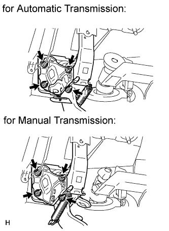 |
Install the hydraulic brake booster assembly with the 4 nuts.
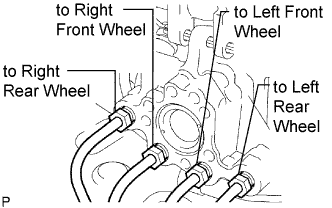 |
Connect the 4 brake lines to the correct positions of the hydraulic brake booster assembly as shown in the illustration.
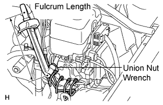 |
Using a union nut wrench, tighten the 4 brake lines.
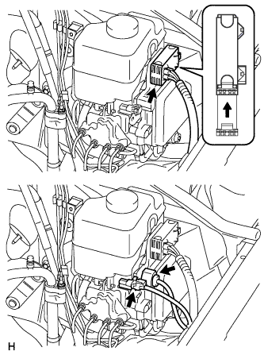 |
Connect the 3 connectors to the hydraulic brake booster.
| 3. INSTALL PUSH ROD PIN |
Apply lithium soap base glycol grease to the inner surface of the hole on the brake pedal lever.
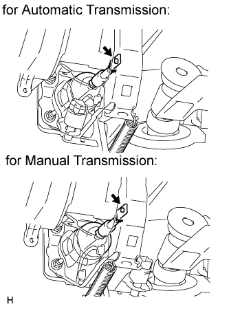 |
Set the master cylinder push rod clevis in place, insert the push rod pin from the outside of the vehicle and then install a new clip.
| 4. INSTALL DRIVER SIDE KNEE AIRBAG ASSEMBLY |
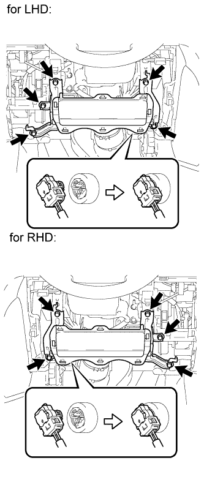 |
Connect the connector.
Install the driver side knee airbag with the 5 bolts.
| 5. INSTALL LOWER NO. 1 INSTRUMENT PANEL FINISH PANEL |
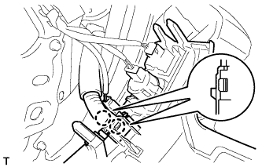 |
Connect the connectors.
Attach the 2 claws to install the sensor.
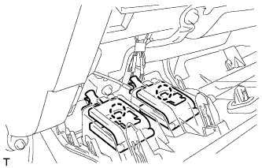 |
Attach the 2 claws to connect the 2 control cables.
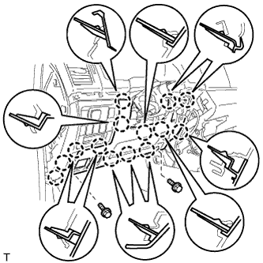 |
Attach the 14 claws to install the finish panel.
Install the 2 bolts.
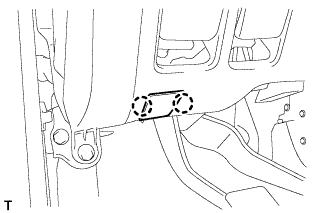 |
Attach the 2 claws to close the hole cover.
| 6. INSTALL COWL SIDE TRIM BOARD LH |
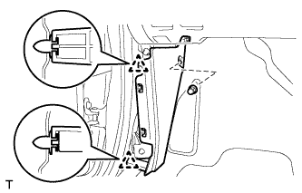 |
Attach the 2 clips to install the trim board.
Install the cap nut.
| 7. INSTALL NO. 1 INSTRUMENT PANEL UNDER COVER SUB-ASSEMBLY |
 |
Connect the connectors.
Attach the 3 claws to install the under cover.
Install the 2 screws.
| 8. INSTALL FRONT DOOR SCUFF PLATE LH |
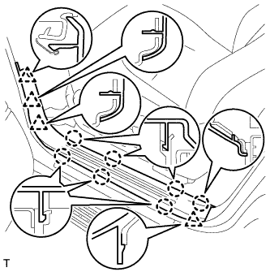 |
Attach the 7 claws and 4 clips to install the scuff plate.
| 9. CONNECT CABLE TO NEGATIVE BATTERY TERMINAL |
| 10. FILL RESERVOIR WITH BRAKE FLUID |
| 11. BLEED BRAKE BOOSTER WITH ACCUMULATOR PUMP ASSEMBLY |
Turn the engine switch on (IG) and operate the pump. The pump will automatically stop after several seconds.
Turn the engine switch off, and fully depress the brake pedal 20 times to release the pressure in the accumulator.
Repeat the previous 2 steps 5 times.
After releasing the pressure from the accumulator, check that the pump operating time is less than 18 seconds. If it takes more than 18 seconds, repeat the previous step.
| 12. BLEED BRAKE LINE |
Bleed air from the front brake system.
Turn the engine switch on (IG).
 |
Connect a vinyl tube to the brake caliper.
Depress the brake pedal several times, then loosen the bleeder plug with the pedal held down (procedure "A").
At the point when the fluid stops coming out, tighten the bleeder plug, then release the brake pedal (procedure "B").
Repeat procedure "A" to "B" until all the air in the fluid has been bled out.
Repeat the above procedures to bleed the other front brake line.
Bleed air from the rear brake system.
Turn the engine switch on (IG) and depress the brake pedal.
 |
Connect a vinyl tube to the brake caliper.
Loosen the bleeder plug and release air.
When the air is completely bled out of the brake fluid through the bleeder plug, tighten the bleeder plug.
Repeat the above procedures to bleed the other rear brake line.
Connect the intelligent tester.
Turn the engine switch off.
Connect the intelligent tester to the DLC3.
Turn the engine switch on (IG).
Enter the following menus: Chassis / ABS/VSC/TRC / Utility / Air Bleeding.
Bleed front right brake line.
Select "FR Line" on the intelligent tester.
With "FR Line" turned on with the intelligent tester, depress the brake pedal and hold it to bleed the front right brake line.
Repeat the step above until there are no more air bubbles in the fluid.
Bleed front left brake line.
Select "FL Line" on the intelligent tester.
With "FL Line" turned on with the intelligent tester, depress the brake pedal and hold it to bleed the front left brake line.
Repeat the step above until there are no more air bubbles in the fluid.
Bleed rear right brake line.
Select "RR Line" on the intelligent tester.
With "RR Line" turned on with the intelligent tester, bleed the left brake line.
Repeat the step above until there are no more air bubbles in the fluid.
Bleed rear left brake line.
Select "RL Line" on the intelligent tester.
With "RL Line" turned on with the intelligent tester, bleed the left brake line.
Disconnect the intelligent tester from the DLC3.
Clear the DTCs (Click here).
| 13. BLEED MASTER CYLINDER SOLENOID |
Connect the intelligent tester to the DLC3.
Turn the engine switch on (IG).
Turn the intelligent tester on.
Enter the following menus: Chassis / ABS/VSC/TRC / Active Test.
Connect a vinyl tube to the rear brake caliper LH or RH.
Loosen the bleeder plug.
Select "VSC/TRC Solenoid (SRMF) and VSC/TRC Solenoid (SRMR)" to drive the solenoids and bleed air from the rear brake caliper (procedure "A").
Repeat procedure "A" until all the air in the brake fluid is bled out.
When the air is completely bled out of the brake fluid through the bleeder plug, tighten the bleeder plug.
Repeat the above procedures to bleed the front brake line LH or RH.
Turn the engine switch off.
Turn the engine switch on (IG).
Clear the DTCs (Click here).
| 14. CHECK BRAKE PEDAL HEIGHT |
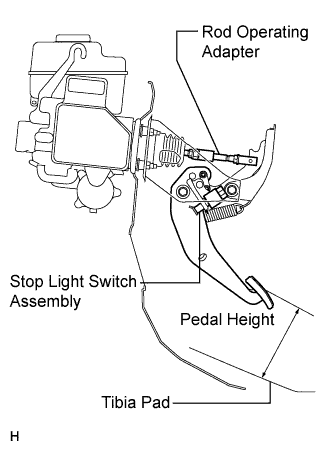 |
Check the brake pedal height.
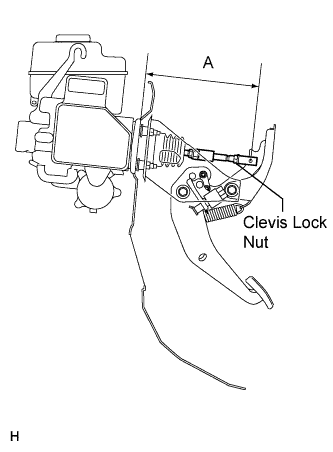 |
Adjust the rod operating adapter length.
Remove the clip and clevis pin.
Loosen the clevis lock nut.
Adjust the rod operating adapter length by turning the pedal push rod clevis.
Tighten the clevis lock nut.
Set the master cylinder push rod clevis in place, insert the push rod pin from the outside of the vehicle and then install a new clip.
If the pedal height is incorrect even if the rod operating adapter is adjusted, check that there is no damage in the brake pedal, brake pedal lever, brake pedal support and dash panel.
| 15. CHECK PEDAL FREE PLAY |
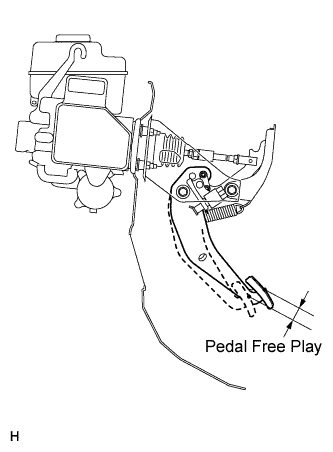 |
Push in the pedal until the beginning of the resistance is felt. Measure the pedal free play.
| 16. CHECK PEDAL RESERVE DISTANCE |
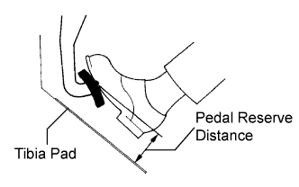 |
Release the parking brake lever. With the engine running, depress the pedal and measure the pedal reserve distance as shown in the illustration.
| 17. CHECK FLUID LEVEL IN RESERVOIR |
 |
When inspecting or refilling with the engine switch off, depress the brake pedal 40 times or more (there will be less pedal resistance and the pedal stroke will lengthen), and then add fluid until the fluid level is at the MAX line.
| 18. INSPECT FOR BRAKE FLUID LEAK |
| 19. INSPECT BRAKE MASTER CYLINDER OPERATION |
Inspect the brake master cylinder operation (Click here).